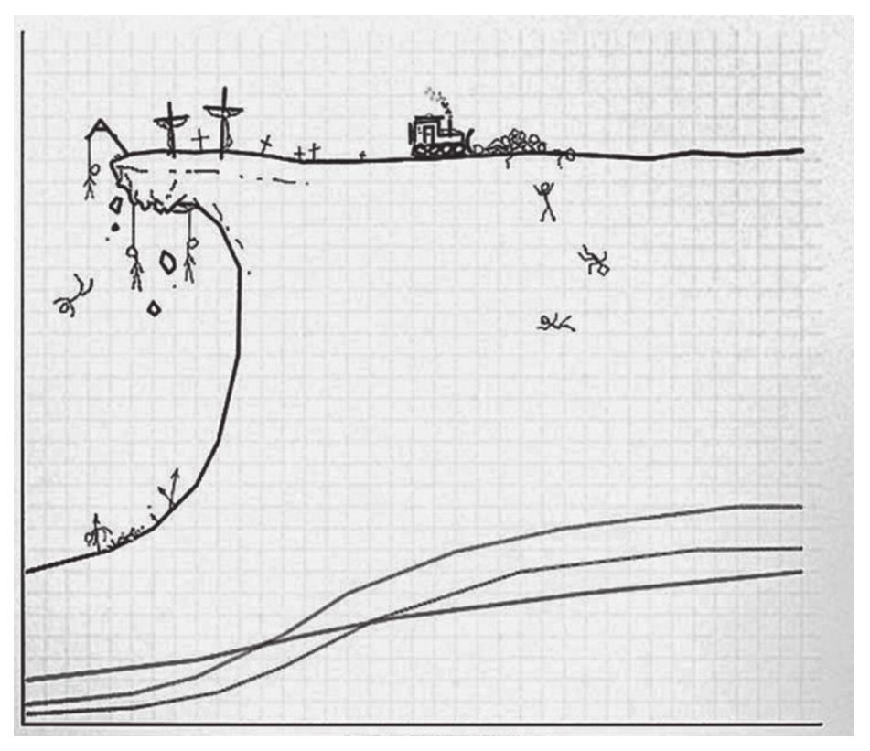

这是一个信息技术爆炸的时代，计算机编程语言和框架层出不穷，同时，编程的风格也在发生变化。也许你还没有注意到，但是变化的确在发生。曾经面向对象式编程方法一统天下，如今越来越多开发者开始转向函数式编程方法；与此同时，一直具有统治地位的指令式编程方法，也发现自己要面对一个新的对手：响应式编程。在这本书里，我们介绍的就是兼具函数式和响应式两种先进编程风格的框架RxJS。
RxJS是Reactive Extension这种模式的JavaScript语言实现，通过学习了解RxJS，你将打开一扇通往全新编程风格的大门。
当然，我们学习RxJS，并不是因为RxJS是一项炫酷的技术，也不是因为RxJS是一个最新的技术。在技术的道路上，如果只是追逐“炫酷”和“最新”，肯定是要吃苦头的，因为这是舍本逐末。
我们学习和应用RxJS，是因为RxJS的的确确能够帮助我们解决问题，而且这些问题长期以来一直在困扰我们，没有好的解决办法，这些问题包括：
·如何控制大量代码的复杂度；
·如何保持代码可读；
·如何处理异步操作。
RxJS的价值在于提供了一种不一样的编程方式，能够解决很多困扰我们开发者的问题。
打开了这本书的读者，你们想必也曾经面对过软件开发过程中的这些挑战，学习RxJS能够帮助大家在“军火库”中增加一种有力武器，也许你不用随时随地使用这种武器，但是，你肯定多了一种解决这些问题的更有效方法。
不过，可能你也早有耳闻，RxJS的学习曲线非常陡峭，可以说已经陡峭到了不能称为学习曲线的程度，应该称为“学习悬崖”。这并不夸张，我个人学习RxJS就尝试了三次。
第一次学习RxJS时，感觉这种思想很酷，但是很快就发现太多概念都是交叉出现的，文档中为了解释一个概念，就会引入一个新的概念，当我去了解这个新的概念的时候，发现为了解释这个新的概念又需要理解其他的概念，整个RxJS的知识图就像是一个迷宫，我第一次学习RxJS的经历就终结在这个迷宫之中。
几个月后，我第二次鼓起勇气来学习RxJS，因为有了第一次的一些基础，这一次还比较顺利，我把概念都掌握得差不多了，但是接下来面对的就是RxJS中大量的操作符，RxJS的应用几乎就是在选择用哪种操作符合适。虽然我把RxJS的迷宫整个都摸了一遍，但是很多操作符我也没有发现实际的应用场景，所以这一次学习最后依然不了了之。
最后，终于有个机会，我需要用RxJS来解决实际的问题。这一次，因为存在实际应用的驱动，我不得不深入去理解RxJS的内在机制，揣摩一个操作符为什么要设计成这样而不是另一个样子，把自己摆在RxJS的角度来思考问题。我还是很幸运，这一次，终于对RxJS有了一个全面的认识。
我终于体会到RxJS的卓越之处，我很兴奋，希望这个工具能够被更多人了解，于是我向朋友们介绍RxJS，有的朋友的确花了时间去学习，但是，他们大多数最后依然放弃了。
怎么会这样？简单来说，是因为RxJS的学习曲线太陡峭。

上图就是对RxJS学习曲线的形象描述 [1] ，一般知识的学习曲线像是一个小山坡，而RxJS的学习曲线就像是一个悬崖，而且这个悬崖有的部分的倾斜角度超过了90度！
怎么会这样？这个问题我也思考了很久，回顾自己三次学习RxJS的过程，我发现了问题的所在，那就是，目前几乎没有一个像样的用线性方法教授RxJS的教材。
RxJS是开源软件，这个软件经过了很长时间的演进，代码的确可圈可点，但是其文档实在算不上优秀。RxJS的官方文档内容虽然不少，但是内容太多，很多部分之间相互引用，并没有一步一步告诉初学者该如何入门，初学者很容易（就像我第一次学习RxJS一样）发现自己陷入一个巨大的、没有头绪的迷宫之中。
于是我想，既然RxJS是一个好东西，那为什么不用一种简单易懂的方式来介绍这种技术呢？这也正是写作本书的动因。
在这本书里，我会尽量用一种线性的方法来介绍RxJS的各个方面，读者按照正常的、从前到后的顺序来阅读，不需要在各个知识点之间跳来跳去，这样，当读者看到最后一页的时候，应该就能够对RxJS有全面深刻的认识了。
读者可能会想，RxJS这样一个复杂难懂的东西，我有必要去学吗？如果你只是满足于现状，那真的不用去学，不过，我前面也说过，当今世界的变化和发展非常快，函数式编程在目前也许还不起眼，但是在未来可能会占统治地位，这个变化可能发生在明年，也可能发生在明晚。你肯定不希望当变化发生的时候自己手足无措，所以，花一些时间来接触这个面向未来的思想，对你绝对没有坏处。
坦白地说，我并不相信每个读者学习RxJS的经历都会一帆风顺，如果你真的能够一次就学透RxJS，那你真的很可能是一个天才，记得一定要给我留言 [2] ；如果你在学习中遇到一些挫折，请相信，你并不孤单，这本书的作者就经历了三次学习才真正学会RxJS，任何疑问都可以留言和我交流。
让我们开始这段旅程吧！
本书的内容
本书以线性方式来介绍RxJS，所以建议读者以顺序的方式来阅读本书，如果读者觉得对某一个方面已经十分了解，也可以跳过相关章节，不过，还是希望读者在时间允许的情况下阅读全部内容，你肯定会有新的体会。本书包含15章，章节的内容如下分布。
第1章 函数响应式编程。 这一章用一些例子展示RxJS体现的编程风格，引出两个重要的概念：函数式编程和响应式编程，使用RxJS的开发者必须先理解这两种风格。
第2章 RxJS入门。 这一章介绍软件项目中导入RxJS的方法，RxJS中的基本概念，包括数据流、操作符和观察者模式。
第3章 操作符基础。 使用RxJS很大程度上就是在使用操作符，这一章会介绍RxJS中操作符的实现原理。
第4章 创建数据流。 这一章介绍RxJS中创建数据流的不同方法，包括RxJS提供的主要创建类操作符的使用方法。
第5章 合并数据流。 这一章介绍如何合并多个数据流，包括合并类操作符的使用方法详解。
第6章 辅助类操作符。 这一章介绍不是很起眼却很重要的两类操作符，数学类和布尔条件类操作符。
第7章 过滤数据流。 这一章介绍如何让流过数据管道的数据根据规则筛选掉一部分，在这一章还会介绍用筛选法进行回压控制的方法。
第8章 转化数据流。 这一章介绍对流经数据管道的数据进行格式转化的方法，包括RxJS提供的各种转化类操作符的用法。
第9章 异常错误处理。 这一章介绍数据流中产生的异常的处理方法，包括如何捕获异常和实现重试。
第10章 多播。 这一章介绍如何让一个数据源的内容被多个观察者接收，包括Subject的使用方法和RxJS对各种多播场景的支持。
第11章 掌握时间的Scheduler。 这一章介绍RxJS中Scheduler的概念。
第12章 RxJS的调试和测试。 介绍RxJS应用的调试和单元测试方法，深入介绍如何利用RxJS写出高可测试性的代码。
第13章 用RxJS驱动React。 这一章介绍RxJS和React结合的方法。
第14章 Redux和RxJS结合。 这一章介绍Redux和RxJS的组合方式，包括如何用RxJS实现Redux的功能，如何用Redux-Observable来发挥两者的共同的优势。
第15章 RxJS游戏开发。 这一章介绍用RxJS实现一款游戏breakout的完整过程，综合了全书介绍的所有RxJS知识点。
本书的目标读者
本书适合于所有网页应用的前端开发者，如果你在日常工作中还在使用jQuery这样的命令式编程风格的工具，那么接触RxJS绝对会开阔你的视野；也许你已经接触过React、Redux、Vue或者Angular这样体现函数式编程思想的工具，那么阅读本书可以让你更上一层楼。
阅读本书只需要了解基本的JavaScript知识，可以说，只要掌握JavaScript，愿意接受函数响应式编程这种思维方式，再加上一点耐心，你就肯定能从阅读本书中获益。
源代码
本书中包含大量的代码示例，所有代码都配备了尽量详细的解释，建议读者要阅读所有源代码部分，因为，无论如何开发软件，最后思想都是要落实到代码中。
RxJS本身的源代码是用TypeScript编写的，目前重度使用RxJS的Angular前端框架也使用TypeScript，但是，本书并没介绍TypeScript语言，介绍这个语言就足够再写一本书了。RxJS的学习曲线已经很陡了，这本书不希望再给读者增加一项学习负担。更重要的是，使用RxJS并不是必须使用TypeScript，完全可以使用纯JavaScript来应用RxJS的一切功能。如果开发者想要对代码增加类型检查，可以使用TypeScript，也可以使用JavaScript配合Flow，这些都可以自由选择，不过，类型检查不是本书讨论的范围，所以，本书中的所有源代码都是纯JavaScript形式的。
读者可以在本书配套的GitHub源代码库（网址https://github.com/mocheng/dissecting-rxjs ）中找到所有的相关代码，代码按照章的内容组织，比如，想要查看第15章介绍的breakout游戏，对应源代码可以在chapter-15/breakout目录下找到。
除了网页应用之外，大部分示例代码可以直接在命令行通过Node.js运行环境查看结果，建议使用npx和babel-node指令执行，下面是一个执行命令示例。
npx babel-node chapter-01/declarative/addOne.js
如果读者发现代码或者书中的错误，可以直接在本书的GitHub项目中提交问题，请不吝斧正。
致谢
首先要感谢我的家人，写作这本书占去了我很多的业余时间，没有家人的理解和支持，这本书不可能完成。
感谢Hulu公司的网站前端开发团队，本书中的很多内容都是和团队讨论得到的体会。
感谢机械工业出版社的吴怡编辑，因为她的帮助和鼓励，这本书才得以出版。
还要感谢RxJS社区中每一个开发者，因为大家以积极开放的心态分享知识，这项技术才得以传播，我很荣幸能够为这项技术的发展和传播贡献一点力量。
最后，要感谢读者选择本书，使我们有缘结识，希望阅读这本书会给你带来愉快而充实的体验。
[1] 源自https://twitter.com/emanuelcanha/status/807929616375676928。
[2] 作者联系方式：https://www.zhihu.com/people/morgancheng/。